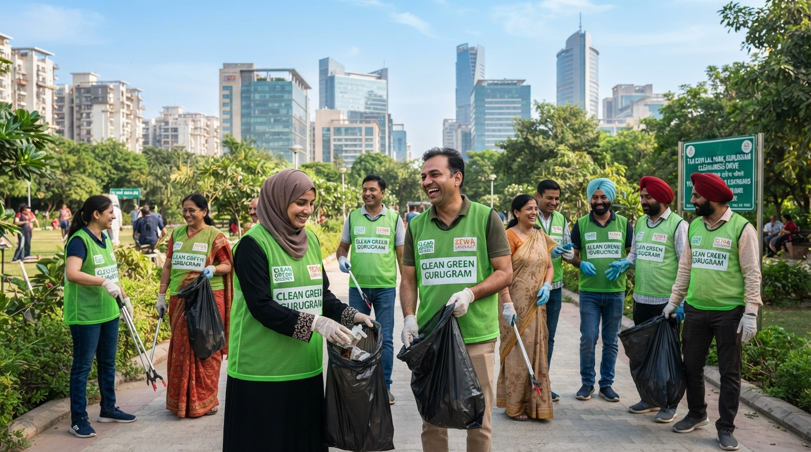
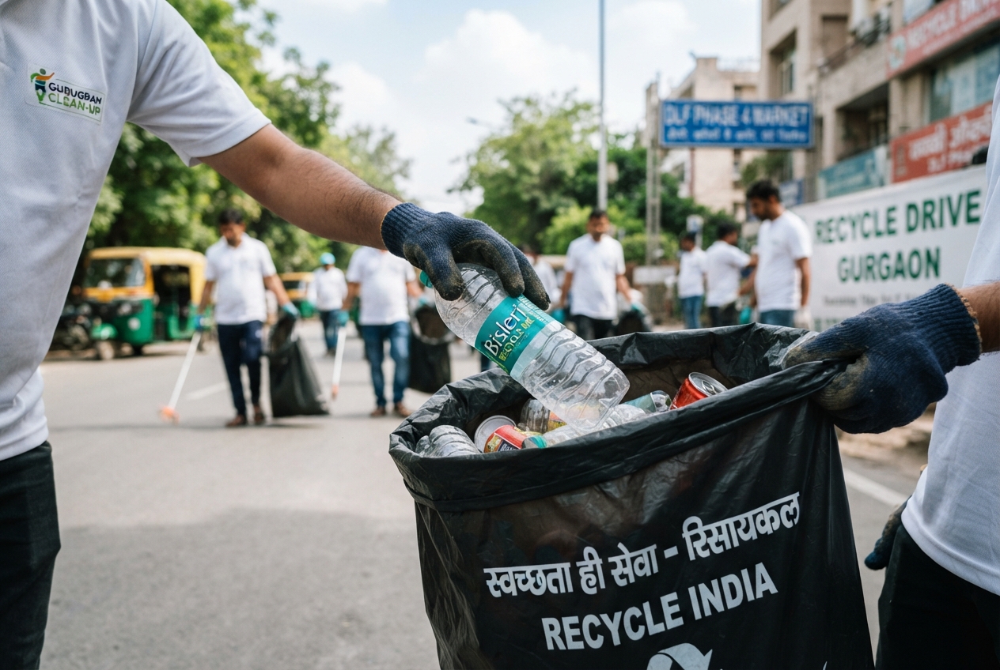
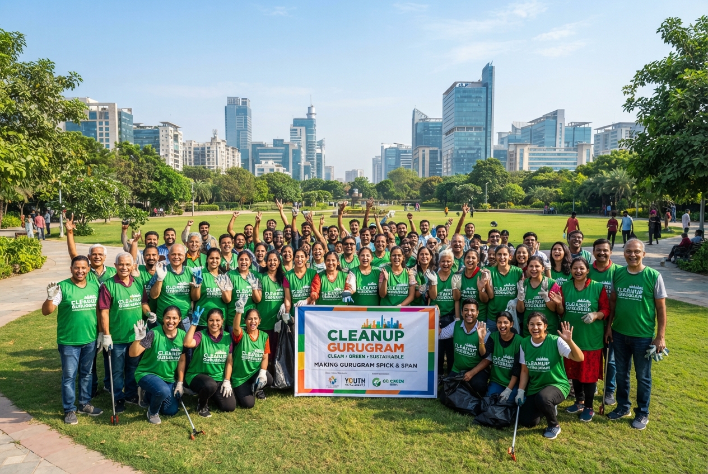

cleaning_services
Clean Streets
Organizing weekly drives to clear litter from major thoroughfares and residential sectors.

Join hands with your neighbors in community cleanup drives. Together, we can transform our city's streets, parks, and public spaces for a sustainable future.
We focus on high-impact areas to maximize our community's environmental wellbeing.
Organizing weekly drives to clear litter from major thoroughfares and residential sectors.
Restoring public parks by removing waste and planting native shade trees.
Educating communities on proper segregation and sustainable disposal practices.
Join our next big event and make an immediate impact.

We're tackling the commercial market area and surrounding green belts. Gloves, bags, and refreshments will be provided. Perfect for first-time volunteers!
Volunteer of the Month
Priya Sharma
Seeing the immediate transformation of our local park was incredibly fulfilling. It's not just about picking up trash; it's about reclaiming our shared spaces.
Priya Sharma
Sector 14 Resident & Weekly Volunteer

I love spending my Sunday mornings making a difference. The energy at these drives is contagious, and you get to meet so many like-minded people who want to see Gurugram thrive.
Rahul M.
Volunteer since 2023

It was incredible to see how much we could achieve in just a few hours. Seeing the market area completely clean of plastic wrappers made every drop of sweat worth it.
Rahul Sharma
First-time Volunteer
Glimpses of our community in action across Gurugram.
Completed community actions you can learn from and join next time.
Community-led recycling initiative in the heart of DLF.
Over 100 volunteers joined to restore our central park.
Planting native saplings for a greener tomorrow.
Every piece of litter picked up and every volunteer hour logged brings us closer to a cleaner city.